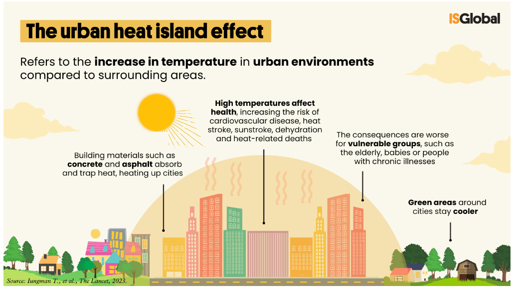
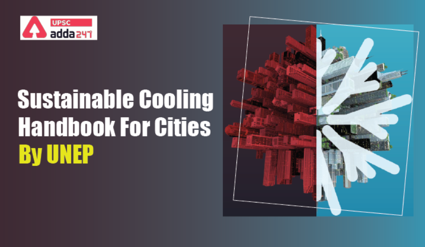
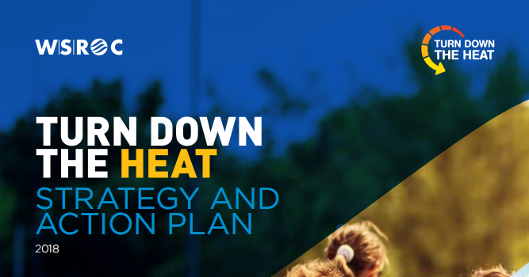
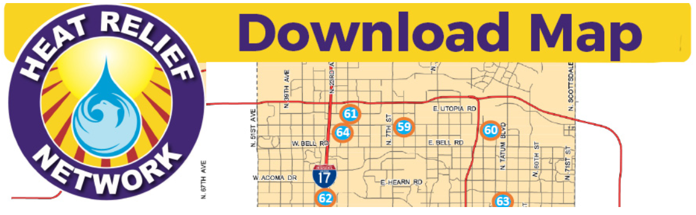
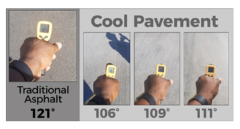

8 Temperature and Policy
Summary
Temperature and weather sometime bring issues to cities, such as heat wave and tornadoes. In response, governments and organizations worldwide are actively proposing policies and beginning actions to address environmental issues. Here, we focus on Urban Heat Island (UHI) as an example to show how temperature issue affects cities and how cities react to it.
Urban heat island effect is a phenomenon in which the temperature in urban centers is significantly higher than in the surrounding rural areas. This is because of dense urban roads and buildings that are more likely to absorb heat, and the lack of vegetation that cools the environment. Urban heat island could cause many problem in cities, in terms of both economy and life. In Europe, over 4% of summer mortality is due to high temperature. And some studies show that high green house gas will cause a higher percent GDP lost.

Source: ISGlobal
Many global, metropolitan, local policies are made to deal with the city problems, however, are they all truly effective and implemented? The answer is no. In fact, some of them are not well thought out:
Problem 1: Too much information
Sample: Beating the Heat: A Sustainable Cooling Handbook for Cities
Beating the Heat is offers city planners an encyclopaedia of proven options to deal with urban heat, which includes 80 supporting case studies and totally 208 pages. As the first guide for new planner, the odds is they will not read and engage with all of them. So the better way is to use baseline assessment to classify and simplify.

Source:UPSC
Problem 2: No specific consideration
Sample: Western Sydney: Turn Down the Heat Strategy and Action, 2018
To react the urban heat in Western Sydney, “Turn Down the Heat Strategy and Action” was published in 2018. An some in-depth assessments had already been taken place, including the future of urban heat in Western Sydney and the impact of high temperature on human, economy and buildings. However, it is also listed in the Beating the Heat guide, which means that it wasn’t really implemented until 2021. This leads one to question: is the policy plan really just a plan?
In my opinion, this is majorly due to the strategy does not provide specific steps and methods for implementation. For example, what is the workflow and timeline of the action? And who will be involved in this action and what are their respective responsibilities? If thees specific things do not mention in the plan, the action will lack of guiding and performability and finally vacant.

Source: WSROC
Application
Strategy: Heat Actions in Phoenix, Arizona
Urban heat islands and high temperatures affect the living quality and even lives of Phoenix’s residents. The New York Times reported that a “relentless and lethal blanket of heat” had killed 20 people in Phoenix in just a week. A climate justice reporter even commented that “America’s hottest city is nearly unlivable in summer”. In the group presentation, we discussed how to design a green bus stop project to react to the heat. Here, I will focus on the heat actions that phoenix government proposed and discuss.
Heat action 1: Heat Relief Network
“The Heat Relief Network (Phoenix) offers free water and indoor locations to cool off. Locations on the downloadable map are marked hydration stations and/or cooling refuge locations for anyone needing to get out of the heat.” This action is available from May 1 to September 30.

Source: City of Phoenix
This is a very useful measure that allows people suffering from the heat to quickly know the nearest free water and indoor place, minimizing the damage caused by the heat. But website does not mention about how to access to this map, and I think this would be a very noteworthy point because user-friendly for all ages should be ensured. What’s more, if this network could be available for the whole year would be better.
Heat action 2: The Cool Pavement Pilot Program
“The Cool Pavement Pilot Project launched in 2018 with test projects in selected portions of eight neighborhoods and one city park to receive cool pavement treatment as part of a pilot project. And new projects have been initiatiated in 2021 to test alternative coating materials.”

Source: City of Phoenix
The best point in this action is that it is honestly testing and improving the schemes rather than just planning. In September 2021, the Phoenix Street Transportation Department and Office of Sustainability discussed the results of the first year and affirmed its usefulness and operability. In October 2021, the pilot program ended and cool pavement becomes a regular program.
Personal Reflection
This week I have learned about how policies apply in urban issues, especially for temperature. There are many samples and cases provided in the slides, which deeply broadened my knowledge system. After reading such amount of policies and strategies, I have two thoughts:
The first one is, although there are many similarities in problems and solutions between cities, I found that all metropolitan policy reveal that they are very well adapted to themselves. For example, if a city is very dry, its cool action may more focus on planting trees rather than build cool equipments. This is why we need global policies for guidance, but also need the adapted local policies.
The second one is I realized that the official policies do not mean absolute correctness. We need to maintain critical and objective to think rationally about the strengths and weaknesses of each policy and strategy, and use expertise to discuss and enhance it, only then can urban problems be better solved.